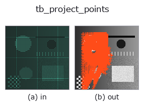

typed op• Data kinds: points → keypoints
• Call: fullseye.apply(img, "tb_project_points", a=0.5, b=0.5) (2-D model = एक image + दो scalar knobs a,b∈[0,1])

*Figure synthetic 128×128 input पर सच में चलाकर मिला output है। बाईं ओर input, दाईं ओर output। Point clouds ऊपर से देखे गए scatter के रूप में (brightness = z), 1-D series line के रूप में, volumes z दिशा में maximum-intensity projection के रूप में, videos बीच के frame के रूप में, complex images amplitude के रूप में, और जो return values चित्र नहीं बन सकते वे स्वयं values के रूप में दिखाए जाते हैं।*
*Knob a output नहीं बदलता (मापा गया: 0.1 / 0.5 / 0.9 पर एक जैसा)।*
*Knob b output नहीं बदलता (मापा गया: 0.1 / 0.5 / 0.9 पर एक जैसा)।*
Stages (पहले आने वाले ops → यह op, बाएँ से क्रम में):
▸ tb_project_points: stages का figure (docs site)
दूसरी images पर भी (synthetic scene / photo / coins। ऊपर की row में inputs, नीचे की row में उनके outputs। Knobs default पर):
▸ tb_project_points: दूसरी images पर output (docs site)
3D point cloud (N,3) → image coordinates (u,v) और depth। Pinhole (depth_to_points की forward दिशा)।
K = camera की intrinsic matrix [[fx,0,cx],[0,fy,cy],[0,0,1]]। R,t से extrinsic pose। world model का observation mapping।
P_cam = R @ P + t (R (3,3), t (3,); None का अर्थ identity / zero) को u = fx·X/Z + cx, v = fy·Y/Z + cy से project किया जाता है। return value (uv (N,2), depth (N,)): uv[:,0] = u (column), uv[:,1] = v (row), depth camera coordinates का Z है (clip से पहले की raw value, negative भी वैसी ही)। K को K[0,0] आदि से index किया जाता है, इसलिए यह numpy array होना चाहिए (nested list नहीं चलेगी)। Z को भाग देने से पहले कम से कम 1e-6 पर clip किया जाता है, इसलिए camera के पीछे के points भी हटाए नहीं जाते और उनके u,v बहुत बड़े हो जाते हैं (caller उन्हें depth > 0 से हटाता है)। image के बाहर के points भी लौटाए जाते हैं (render_point_depth range से काटता है)। यह depth_to_points का inverse है; depth_to_points(render_point_depth(...)) एक round trip बनाता है।
2-D evolution registry में bridge किया गया 3d op project_points। implementation वही है, केवल calling convention को op(v, a, b) के अनुसार ढाला गया है। इस op में कोई tuning point नहीं है; न a उपयोग होता है, न b।
• Sample data catalog (DL URL / license) — 2-D के लिए skimage.data (BSD/public) + synthetic, 3-D के लिए real data sources (Stanford/PDS आदि) के DL URL।
• Operators का स्रोत और संदर्भ — इस op family के मूल research/methods के स्रोत।
नीचे का program सच में चलता है, यह जाँचा गया है (figure वाला ही input)। Studio की help में यह block buttons बन जाता है, जिनसे इसे वहीं load करके चलाया जा सकता है।
img_to_points 0.50 0.50 tb_project_points 0.50 0.50
▸ यह pipeline load करें · Load करके चलाएँ
नीचे के उदाहरण मूल ledger op project_points को call करते हैं। यह bridge op वही implementation है, बस fn(v, a, b) convention के अनुसार ढाला गया है, इसलिए व्यवहार वैसा ही लागू होता है (केवल call का रूप अलग है)।
• pnp_pose_outliers — py -3.11 examples_3d/pnp_pose_outliers.py
• pose_estimation — py -3.11 examples_3d/pose_estimation.py
keypoints को input के रूप में लेते हैं)identity · tb_keypoints_uv_to_points · tb_keypoints_to_image2d
typed)tb_points_to_voxel · tb_estimate_point_normals · tb_iss_keypoints · tb_render_point_depth · tb_statistical_outlier_removal · tb_radius_outlier_removal · tb_voxel_grid_downsample · tb_mls_smooth
*Provenance: ops.py — 2D operator registry. यह per-op note tools/opdocs.py md से अपने-आप generate होता है (हाथ से edit न करें)।*
© 2026 Kazufumi Furuse — Fullseye operator documentation. Licensed under Apache-2.0.